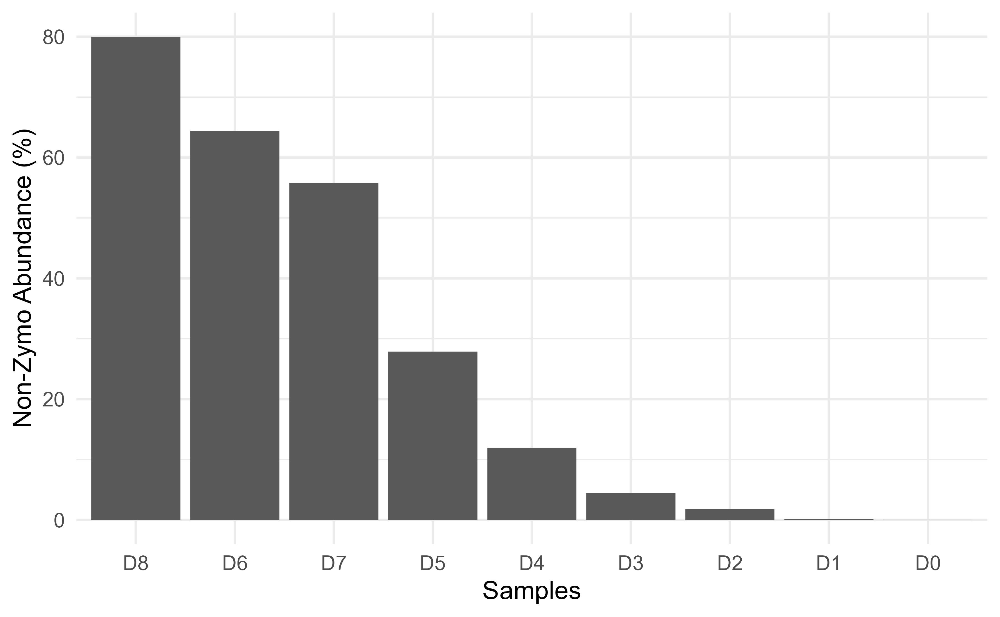

Look at your mocks…
Every microbiome sequencing experiment must have a positive control.
However, how do we make use of these mock controls to guide our quality
check is not easily available. A basic question to asks, Is the
composition in experimental mock standards similar to theoretical
expected composition?
We can visually compare the composition bar-plots and check for
correlation between experimental and theoretical community
composition.chkMocks eases these basic comparisons.
Install
library(devtools) # make sure you have installed devtools
install_github("microsud/chkMocks")
library(chkMocks)
library(dplyr)
#>
#> Attaching package: 'dplyr'
#> The following objects are masked from 'package:stats':
#>
#> filter, lag
#> The following objects are masked from 'package:base':
#>
#> intersect, setdiff, setequal, union
library(phyloseq)
library(patchwork)
library(ggplot2)ZymoBiomics
Before starting the analysis you need:
- Raw data processed with dada2 pipeline to get a phyloseq object with
taxa_namesas ASV seqs.
- If the phyloseq object has samples and mocks, then subset to keep only the mocks.
Here, the example data are from Karstens L, Asquith M, Davin S, Fair D, Gregory WT, Wolfe AJ, Braun J, McWeeney S. 2019. Controlling for contaminants in low-biomass 16S rRNA gene sequencing experiments. mSystems 4:e00290-19.
ZymoExamplePseq
#> phyloseq-class experiment-level object
#> otu_table() OTU Table: [ 946 taxa and 9 samples ]
#> sample_data() Sample Data: [ 9 samples by 6 sample variables ]
#> tax_table() Taxonomy Table: [ 946 taxa by 6 taxonomic ranks ]
# check information
sample_data(ZymoExamplePseq)
#> X.SampleID SampleDescription DNA_conc SampleType Description is.neg
#> D0 D0 MC_Neat 138.8 MockCommunity Mock FALSE
#> D1 D1 MC_1:3 109.2 MockCommunity Mock FALSE
#> D2 D2 MC_1:9 105.8 MockCommunity Mock FALSE
#> D3 D3 MC_1:27 60.6 MockCommunity Mock FALSE
#> D4 D4 MC_1:81 34.9 MockCommunity Mock FALSE
#> D5 D5 MC_1:243 22.6 MockCommunity Mock FALSE
#> D6 D6 MC_1:729 20.0 MockCommunity Mock FALSE
#> D7 D7 MC_1:2187 11.4 MockCommunity Mock FALSE
#> D8 D8 MC_1:6561 13.8 MockCommunity Mock FALSEA single function, checkZymoBiomics will do the
following:
Take an input phyloseq object of mock communities with
taxa_names as ASV seqs and use the
ZymoTrainingSet to assign taxonomy. The
ZymoTrainingSet contains only the full-length 16S rRNA gene
sequences of the candidates in ZymoBIOMICS™ Microbial Community
Standard. Catalog
No. D6300. ASVs that are unrelated to ZymoTrainingSet
are labelled unclassified. The function will return two phyloseq objects
a) ASVs level and b) Agglomerated at Species level. The agglomerated
species level data is used to check for correlation with theoretical
composition.
output.dat <- checkZymoBiomics(ZymoExamplePseq,
mock_db = ZymoTrainingSet,
multithread= 2,
threshold = 60,
verbose = FALSE)
#> Using internal reference database
#> for ZymoBiomics
#> Warning: Expected 8 pieces. Missing pieces filled with `NA` in 935 rows [9, 11,
#> 12, 13, 14, 15, 16, 17, 18, 19, 20, 21, 22, 23, 24, 25, 26, 27, 28, 29, ...].
cortable <- output.dat$corrTable
colnames(cortable) <- c("MockSampleID", "Correlation2ZymoTheoretical", "MockSampleID_2" )
cortable
#> # A tibble: 10 × 3
#> MockSampleID Correlation2ZymoTheoretical MockSampleID_2
#> <chr> <dbl> <fct>
#> 1 D0 0.233 D0
#> 2 D1 0.483 D1
#> 3 D2 0.383 D2
#> 4 D3 0.35 D3
#> 5 D4 0.367 D4
#> 6 D5 -0.117 D5
#> 7 D6 0.05 D6
#> 8 D7 0 D7
#> 9 D8 0.0833 D8
#> 10 ZymoTheoretical 1 ZymoTheoreticalGet the agglomerated species level data.
ps_species <- output.dat$ps_species
ps_species
#> phyloseq-class experiment-level object
#> otu_table() OTU Table: [ 9 taxa and 10 samples ]
#> sample_data() Sample Data: [ 10 samples by 8 sample variables ]
#> tax_table() Taxonomy Table: [ 9 taxa by 9 taxonomic ranks ]Check assignments
get_taxa_unique(output.dat$ps_species, "Species")
#> [1] "Bacillus.subtilis" "Listeria.monocytogenes"
#> [3] "Staphylococcus.aureus" "Enterococcus.faecalis"
#> [5] "Lactobacillus.fermentum" "Escherichia.coli"
#> [7] "Salmonella.enterica" "Pseudomonas.aeruginosa"
#> [9] "Unknown"Plot composition
p <- plotZymoDefault(output.dat)
p
The above plot demonstrates how well/bad the experimental mocks
behaved compared to theoretical composition.
The data from Karstens L, et al., 2019. mSystems started
from cells->DNA extraction->pcr amplification->sequencing. At
every step there is a possibility for bias. This is demonstrated by
differences between the undiluted mock sample and Zymo theoretical
composition. Additionally, diluted samples have several unknown,
potential contaminants common to low-biomass samples.
The table one in this article provides the percent contaminants for
each dilution. These values were D0 = 0.1, D1 = 0.1, D2 = 1.8, D3 = 4.5,
D4 = 12.0, D5 = 27.9, D6 = 64.5, D7 = 55.8, D8 = 80.1.
We can check output of checkZymoBiomics for ASVs marked as
‘Unknown’ that are not matching any of the mock community taxa.
round(otu_table(output.dat$ps_species)["Unknown",],1)
#> OTU Table: [1 taxa and 10 samples]
#> taxa are rows
#> D0 D1 D2 D3 D4 D5 D6 D7 D8 ZymoTheoretical
#> Unknown 0.1 0.1 1.8 4.5 12 27.9 64.4 55.8 80 0Check how individual taxa were measured.
p <- plotZymoDefault(output.dat)
# using patchwork plot to extract first bar plot
p[[1]] + facet_wrap(~FeatureID) +
theme_minimal(base_size = 10) +
theme(legend.position = "none",
strip.text = element_text(face="italic")) +
ggplot2::scale_y_discrete(limits = rev(c("ZymoTheoretical","D8", "D6", "D7",
"D5", "D4", "D3", "D2", "D1", "D0")))
Looking at individual strain abundances indicates under counting of Staphylococcus aureus. It is also important to note the limitations of species level assignments for short-read length ASVs.
In the diluted mock samples, there are Unknown taxa
i.e. those that are not of ZymoBiomics origin.
Check for their contribution.
sp.df <- phyloseq::psmelt(ps_species) %>%
dplyr::filter(Species=="Unknown" & Sample !="ZymoTheoretical")
# we keep the order of dilution of samples
sp.df$Sample <- factor(sp.df$Sample, levels = c("D8", "D6", "D7", "D5",
"D4", "D3", "D2", "D1", "D0"))
ggplot(sp.df, aes(Sample, Abundance)) +
geom_col() + theme_minimal() +
ggplot2::ylab("Non-Zymo Abundance (%)")+
ggplot2::xlab("Samples") 
The lowest dilution, D8 has 80% non-ZymoBiomics taxa, so make sure you
have negative controls and check the article by Karstens L, et al. Controlling for
contaminants in low-biomass 16S rRNA gene sequencing experiments.
mSystems 4:e00290-19. All codes from their analysis are available
openly.
Note: The taxonomy of lactobacilli has been updated from L.
fermentum to Limosilactobacillus Zheng J., Wittouck S.,
Salvetti E. et al.,(2020). A taxonomic note on the genus
Lactobacillus: Description of 23 novel genera, emended
description of the genus Lactobacillus Beijerink 1901, and
union of Lactobacillaceae and
Leuconostocaceae.
Thanks to Giovanna Felis
for bringing this to my notice on twitter.
The label for L. fermentum is still being used by ZymoBiomics
and will keep it as it is for now.
A training set and phyloseq object with theoretical composition of ZymoBIOMICS® Gut Microbiome Standard Catalog No. D6331 is also made available.
data(ZymoBiomicsGutTrainingSet)
ZymoBiomicsGutTrainingSet
#> A training set of class 'Taxa'
#> * K-mer size: 9
#> * Number of rank levels: 9
#> * Total number of sequences: 103
#> * Number of groups: 19
#> * Number of problem groups: 0
#> * Number of problem sequences: 0
data(ZymoBiomicsGutPseq)
ZymoBiomicsGutPseq
#> phyloseq-class experiment-level object
#> otu_table() OTU Table: [ 20 taxa and 1 samples ]
#> sample_data() Sample Data: [ 1 samples by 1 sample variables ]
#> tax_table() Taxonomy Table: [ 20 taxa by 7 taxonomic ranks ]Other independently developed tools that are:
ZymoResearch miqScore16SPublic
by Michael Weinstein
QIIME2 q2-quality-control
suggested by Yanxian
Li
OCMS OCMS_zymoBIOMICS
by Nick Ilott
Let me know if there are more tools that need to be mentioned here GitHub issues.
devtools::session_info()
#> ─ Session info ───────────────────────────────────────────────────────────────
#> setting value
#> version R version 4.2.1 (2022-06-23 ucrt)
#> os Windows 10 x64 (build 19045)
#> system x86_64, mingw32
#> ui RTerm
#> language en
#> collate English_United States.utf8
#> ctype English_United States.utf8
#> tz Europe/Berlin
#> date 2023-02-28
#> pandoc 2.19.2 @ C:/Program Files/RStudio/resources/app/bin/quarto/bin/tools/ (via rmarkdown)
#>
#> ─ Packages ───────────────────────────────────────────────────────────────────
#> ! package * version date (UTC) lib source
#> ade4 1.7-19 2022-04-19 [2] CRAN (R 4.2.0)
#> ape 5.6-2 2022-03-02 [2] CRAN (R 4.2.0)
#> assertthat 0.2.1 2019-03-21 [2] CRAN (R 4.2.0)
#> Biobase 2.56.0 2022-04-26 [2] Bioconductor
#> BiocGenerics 0.42.0 2022-04-26 [2] Bioconductor
#> BiocParallel 1.30.3 2022-06-07 [2] Bioconductor
#> biomformat 1.24.0 2022-04-26 [2] Bioconductor
#> Biostrings 2.64.0 2022-04-26 [2] Bioconductor
#> bit 4.0.4 2020-08-04 [2] CRAN (R 4.2.0)
#> bit64 4.0.5 2020-08-30 [2] CRAN (R 4.2.0)
#> bitops 1.0-7 2021-04-24 [2] CRAN (R 4.2.0)
#> blob 1.2.3 2022-04-10 [2] CRAN (R 4.2.0)
#> bslib 0.4.0 2022-07-16 [2] CRAN (R 4.2.1)
#> cachem 1.0.6 2021-08-19 [2] CRAN (R 4.2.0)
#> callr 3.7.2 2022-08-22 [2] CRAN (R 4.2.1)
#> chkMocks * 0.1.03 2022-08-10 [2] local
#> cli 3.3.0 2022-04-25 [2] CRAN (R 4.2.0)
#> cluster 2.1.3 2022-03-28 [3] CRAN (R 4.2.1)
#> codetools 0.2-18 2020-11-04 [3] CRAN (R 4.2.1)
#> colorspace 2.0-3 2022-02-21 [2] CRAN (R 4.2.0)
#> corrr 0.4.4 2022-08-16 [2] CRAN (R 4.2.1)
#> crayon 1.5.1 2022-03-26 [2] CRAN (R 4.2.0)
#> dada2 1.24.0 2022-04-26 [2] Bioconductor
#> data.table 1.14.2 2021-09-27 [2] CRAN (R 4.2.0)
#> DBI 1.1.3 2022-06-18 [2] CRAN (R 4.2.0)
#> DECIPHER 2.24.0 2022-04-26 [2] Bioconductor
#> DelayedArray 0.22.0 2022-04-26 [2] Bioconductor
#> deldir 1.0-6 2021-10-23 [2] CRAN (R 4.2.0)
#> desc 1.4.2 2022-09-08 [2] CRAN (R 4.2.1)
#> devtools 2.4.4 2022-07-20 [2] CRAN (R 4.2.1)
#> digest 0.6.29 2021-12-01 [2] CRAN (R 4.2.0)
#> dplyr * 1.0.9 2022-04-28 [2] CRAN (R 4.2.0)
#> ellipsis 0.3.2 2021-04-29 [2] CRAN (R 4.2.0)
#> evaluate 0.16 2022-08-09 [2] CRAN (R 4.2.1)
#> fansi 1.0.3 2022-03-24 [2] CRAN (R 4.2.0)
#> farver 2.1.1 2022-07-06 [2] CRAN (R 4.2.1)
#> fastmap 1.1.0 2021-01-25 [2] CRAN (R 4.2.0)
#> foreach 1.5.2 2022-02-02 [2] CRAN (R 4.2.0)
#> fs 1.5.2 2021-12-08 [2] CRAN (R 4.2.0)
#> generics 0.1.3 2022-07-05 [2] CRAN (R 4.2.1)
#> GenomeInfoDb 1.32.2 2022-05-15 [2] Bioconductor
#> GenomeInfoDbData 1.2.8 2022-06-11 [2] Bioconductor
#> GenomicAlignments 1.32.1 2022-08-02 [2] Bioconductor
#> GenomicRanges 1.48.0 2022-04-26 [2] Bioconductor
#> ggplot2 * 3.3.6 2022-05-03 [2] CRAN (R 4.2.0)
#> glue 1.6.2 2022-02-24 [2] CRAN (R 4.2.0)
#> gtable 0.3.1 2022-09-01 [2] CRAN (R 4.2.1)
#> highr 0.9 2021-04-16 [2] CRAN (R 4.2.0)
#> htmltools 0.5.3 2022-07-18 [2] CRAN (R 4.2.1)
#> htmlwidgets 1.5.4 2021-09-08 [2] CRAN (R 4.2.0)
#> httpuv 1.6.6 2022-09-08 [2] CRAN (R 4.2.1)
#> hwriter 1.3.2.1 2022-04-08 [2] CRAN (R 4.2.0)
#> igraph 1.3.1 2022-04-20 [2] CRAN (R 4.2.0)
#> interp 1.1-3 2022-07-13 [2] CRAN (R 4.2.1)
#> IRanges 2.30.0 2022-04-26 [2] Bioconductor
#> iterators 1.0.14 2022-02-05 [2] CRAN (R 4.2.0)
#> jpeg 0.1-9 2021-07-24 [2] CRAN (R 4.2.0)
#> jquerylib 0.1.4 2021-04-26 [2] CRAN (R 4.2.0)
#> jsonlite 1.8.0 2022-02-22 [2] CRAN (R 4.2.0)
#> knitr 1.40 2022-08-24 [2] CRAN (R 4.2.1)
#> labeling 0.4.2 2020-10-20 [2] CRAN (R 4.2.0)
#> later 1.3.0 2021-08-18 [2] CRAN (R 4.2.0)
#> lattice 0.20-45 2021-09-22 [3] CRAN (R 4.2.1)
#> latticeExtra 0.6-30 2022-07-04 [2] CRAN (R 4.2.1)
#> lifecycle 1.0.2 2022-09-09 [2] CRAN (R 4.2.1)
#> magrittr 2.0.3 2022-03-30 [2] CRAN (R 4.2.0)
#> MASS 7.3-57 2022-04-22 [3] CRAN (R 4.2.1)
#> Matrix 1.5-1 2022-09-13 [2] CRAN (R 4.2.1)
#> MatrixGenerics 1.8.1 2022-06-26 [2] Bioconductor
#> matrixStats 0.62.0 2022-04-19 [2] CRAN (R 4.2.0)
#> memoise 2.0.1 2021-11-26 [2] CRAN (R 4.2.0)
#> mgcv 1.8-40 2022-03-29 [3] CRAN (R 4.2.1)
#> microbiome 1.18.0 2022-04-26 [2] Bioconductor
#> mime 0.12 2021-09-28 [2] CRAN (R 4.2.0)
#> miniUI 0.1.1.1 2018-05-18 [2] CRAN (R 4.2.1)
#> multtest 2.52.0 2022-04-26 [2] Bioconductor
#> munsell 0.5.0 2018-06-12 [2] CRAN (R 4.2.0)
#> nlme 3.1-157 2022-03-25 [3] CRAN (R 4.2.1)
#> patchwork * 1.1.2 2022-08-19 [2] CRAN (R 4.2.1)
#> permute 0.9-7 2022-01-27 [2] CRAN (R 4.2.0)
#> phyloseq * 1.40.0 2022-04-26 [2] Bioconductor
#> pillar 1.8.1 2022-08-19 [2] CRAN (R 4.2.1)
#> pkgbuild 1.3.1 2021-12-20 [2] CRAN (R 4.2.0)
#> pkgconfig 2.0.3 2019-09-22 [2] CRAN (R 4.2.0)
#> pkgdown 2.0.6 2022-07-16 [2] CRAN (R 4.2.1)
#> pkgload 1.3.0 2022-06-27 [2] CRAN (R 4.2.1)
#> plyr 1.8.7 2022-03-24 [2] CRAN (R 4.2.0)
#> png 0.1-7 2013-12-03 [2] CRAN (R 4.2.0)
#> prettyunits 1.1.1 2020-01-24 [2] CRAN (R 4.2.0)
#> processx 3.7.0 2022-07-07 [2] CRAN (R 4.2.1)
#> profvis 0.3.7 2020-11-02 [2] CRAN (R 4.2.1)
#> promises 1.2.0.1 2021-02-11 [2] CRAN (R 4.2.0)
#> ps 1.7.0 2022-04-23 [2] CRAN (R 4.2.0)
#> purrr 0.3.4 2020-04-17 [2] CRAN (R 4.2.0)
#> R6 2.5.1 2021-08-19 [2] CRAN (R 4.2.0)
#> ragg 1.2.2 2022-02-21 [2] CRAN (R 4.2.0)
#> RColorBrewer 1.1-3 2022-04-03 [2] CRAN (R 4.2.0)
#> Rcpp 1.0.8.3 2022-03-17 [2] CRAN (R 4.2.0)
#> D RcppParallel 5.1.5 2022-01-05 [2] CRAN (R 4.2.1)
#> RCurl 1.98-1.6 2022-02-08 [2] CRAN (R 4.2.0)
#> remotes 2.4.2 2021-11-30 [2] CRAN (R 4.2.0)
#> reshape2 1.4.4 2020-04-09 [2] CRAN (R 4.2.0)
#> rhdf5 2.40.0 2022-04-26 [2] Bioconductor
#> D rhdf5filters 1.8.0 2022-04-26 [2] Bioconductor
#> Rhdf5lib 1.18.2 2022-05-15 [2] Bioconductor
#> rlang 1.0.5 2022-08-31 [2] CRAN (R 4.2.1)
#> rmarkdown 2.16 2022-08-24 [2] CRAN (R 4.2.1)
#> rprojroot 2.0.3 2022-04-02 [2] CRAN (R 4.2.0)
#> Rsamtools 2.12.0 2022-04-26 [2] Bioconductor
#> RSQLite 2.2.14 2022-05-07 [2] CRAN (R 4.2.0)
#> rstudioapi 0.14 2022-08-22 [2] CRAN (R 4.2.1)
#> Rtsne 0.16 2022-04-17 [2] CRAN (R 4.2.0)
#> S4Vectors 0.34.0 2022-04-26 [2] Bioconductor
#> sass 0.4.2 2022-07-16 [2] CRAN (R 4.2.1)
#> scales 1.2.1 2022-08-20 [2] CRAN (R 4.2.1)
#> sessioninfo 1.2.2 2021-12-06 [2] CRAN (R 4.2.0)
#> shiny 1.7.2 2022-07-19 [2] CRAN (R 4.2.1)
#> ShortRead 1.54.0 2022-04-26 [2] Bioconductor
#> stringi 1.7.6 2021-11-29 [2] CRAN (R 4.2.0)
#> stringr 1.4.1 2022-08-20 [2] CRAN (R 4.2.1)
#> SummarizedExperiment 1.26.1 2022-04-29 [2] Bioconductor
#> survival 3.3-1 2022-03-03 [3] CRAN (R 4.2.1)
#> systemfonts 1.0.4 2022-02-11 [2] CRAN (R 4.2.0)
#> textshaping 0.3.6 2021-10-13 [2] CRAN (R 4.2.0)
#> tibble 3.1.7 2022-05-03 [2] CRAN (R 4.2.0)
#> tidyr 1.2.0 2022-02-01 [2] CRAN (R 4.2.0)
#> tidyselect 1.1.2 2022-02-21 [2] CRAN (R 4.2.0)
#> urlchecker 1.0.1 2021-11-30 [2] CRAN (R 4.2.1)
#> usethis 2.1.6 2022-05-25 [2] CRAN (R 4.2.0)
#> utf8 1.2.2 2021-07-24 [2] CRAN (R 4.2.0)
#> vctrs 0.4.1 2022-04-13 [2] CRAN (R 4.2.0)
#> vegan 2.6-2 2022-04-17 [2] CRAN (R 4.2.0)
#> viridisLite 0.4.1 2022-08-22 [2] CRAN (R 4.2.1)
#> withr 2.5.0 2022-03-03 [2] CRAN (R 4.2.0)
#> xfun 0.31 2022-05-10 [2] CRAN (R 4.2.0)
#> xtable 1.8-4 2019-04-21 [2] CRAN (R 4.2.0)
#> XVector 0.36.0 2022-04-26 [2] Bioconductor
#> yaml 2.3.5 2022-02-21 [2] CRAN (R 4.2.0)
#> zlibbioc 1.42.0 2022-04-26 [2] Bioconductor
#>
#> [1] C:/Users/shettys/AppData/Local/Temp/Rtmp8q2PZn/temp_libpath11fc43584955
#> [2] C:/Users/shettys/AppData/Local/R/win-library/4.2
#> [3] C:/Program Files/R/R-4.2.1/library
#>
#> D ── DLL MD5 mismatch, broken installation.
#>
#> ──────────────────────────────────────────────────────────────────────────────Disclaimer: While we use ZymoBiomics data, we the
developers of chkMocks are not associated with the
manufacturers and this work should not be considered as an endorsement
for the said product.